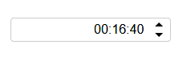

<!DOCTYPE html>
<!--[if IE 8]> <html lang="en" class="ie8 no-js"> <![endif]-->
<!--[if IE 9]> <html lang="en" class="ie9 no-js"> <![endif]-->
<!--[if !IE]><!-->
<html lang="zh">
<!--<![endif]-->
<head><meta name="generator" content="Hexo 3.8.0">
  <meta charset="utf-8">
  
  <title>bwidget-timespinner配置文档 | 李雨的个人笔记</title>
  <meta content="width=device-width, initial-scale=1.0, maximum-scale=1, user-scalable=0" name="viewport">
  <meta http-equiv="X-UA-Compatible" content="IE=edge,chrome=1">
  <meta name="apple-mobile-web-app-capable" content="yes">
  <meta name="apple-mobile-web-app-status-bar-style" content="default">
  <meta name="apple-mobile-web-app-title" content="李雨的博客">
  <meta name="baidu-site-verification" content="7VtzC7CZhh">
  <meta name="google-site-verification" content="uldAIOU_5e0mRTgxB8D-Rm_oQJktnP8t3N7j94ZYwv8">
  <meta name="msvalidate.01" content="2387F6F0858D17A4397180EEEF10B2FE">
  <meta name="author" content="李雨 LiYu">
  <meta name="robots" content="index,follow"> 
  <meta name="google" content="index,follow"> 
  <meta name="googlebot" content="index,follow">
  <meta name="description" content="bwidget-timespinner   这是一个使用原生javascript开发的时间微调控件，可以分别调节时分秒，并且兼容了中文输入法，限制输入非数字。兼容IE9以上浏览器。   npm: https://www.npmjs.com/package/bwidget-timespinner  github: https://github.com/betterliyu/timespinner">
<meta name="keywords" content="timespinner">
<meta property="og:type" content="article">
<meta property="og:title" content="bwidget-timespinner配置文档">
<meta property="og:url" content="https://blog.betterliyu.site/2017/11/02/bwidget-timespinner配置文档/index.html">
<meta property="og:site_name" content="李雨的个人笔记">
<meta property="og:description" content="bwidget-timespinner   这是一个使用原生javascript开发的时间微调控件，可以分别调节时分秒，并且兼容了中文输入法，限制输入非数字。兼容IE9以上浏览器。   npm: https://www.npmjs.com/package/bwidget-timespinner  github: https://github.com/betterliyu/timespinner">
<meta property="og:locale" content="zh-cn">
<meta property="og:image" content="https://blog.betterliyu.site/2017/11/02/bwidget-timespinner配置文档/2017-10-31_15h36_05.png">
<meta property="og:updated_time" content="2019-12-09T14:24:59.320Z">
<meta name="twitter:card" content="summary">
<meta name="twitter:title" content="bwidget-timespinner配置文档">
<meta name="twitter:description" content="bwidget-timespinner   这是一个使用原生javascript开发的时间微调控件，可以分别调节时分秒，并且兼容了中文输入法，限制输入非数字。兼容IE9以上浏览器。   npm: https://www.npmjs.com/package/bwidget-timespinner  github: https://github.com/betterliyu/timespinner">
<meta name="twitter:image" content="https://blog.betterliyu.site/2017/11/02/bwidget-timespinner配置文档/2017-10-31_15h36_05.png">
  
    <link rel="alternative" href="/atom.xml" title="李雨的个人笔记" type="application/atom+xml">
  
 
  
    <link rel="shortcut icon" href="/favicon.ico">
  
  <link rel="apple-touch-icon-precomposed" href="desktop-icon.png">
  <link href="https://fonts.googleapis.com/css?family=Open+Sans:300,400,600,700|PT+Sans+Narrow|Source+Sans+Pro:200,300,400,600,700,900&amp;subset=all" rel="stylesheet" type="text/css">

  <link rel="stylesheet" href="/plugins/normalize.css/normalize.css">
  <link rel="stylesheet" href="/plugins/font-awesome/css/font-awesome.css">
  <link rel="stylesheet" href="/plugins/bootstrap/css/bootstrap.min.css">
  <link rel="stylesheet" href="/css/themes/red.css">
  <link rel="stylesheet" href="/css/main.css">
</head>
</html>
<body class="corporate ">
   <header class="header fixed" id="header">
	<div class="m-nav" id="navContainer">
		<div class="container">
			<div class="mobile-menu" id="mobileMenu">
				<i class="item"></i>
				<i class="item"></i>
				<i class="item"></i>
			</div>
			<a href="/" class="u-logo">
				
			</a>
			<nav class="u-nav">
				<ul class="list">
					 <!--
					 <li class="item">
					 	<a  href="/index.html"><span>博客首页</span></a>
					 </li>
					 
					 <li class="item">
					 	<a  href="https://www.betterliyu.site"><span>我的主页</span></a>
					 </li>
					 -->
          <li class="item f-lg">
						<a href="/" title="博客首页"><i class="fa fa-home"></i></a>
					</li>
          <li class="item f-lg">
						<a href="https://www.betterliyu.site" title="我的主页"><i class="fa fa-user"></i></a>
					</li>
					<li class="item">
						<a href="javascript:;" title="搜索文章"><i class="fa fa-search search-btn popup-trigger"></i></a>
					</li>
				</ul>
			</nav>
		</div>
	</div>
</header>

  <main class="main">
    <div class="container">
  <section id="main">
    
    <h2 itemprop="name">
      <a class="article-title" href="/2017/11/02/bwidget-timespinner配置文档/">bwidget-timespinner配置文档</a>
    </h2>


    <div class="row">
<div class="col-md-9 col-sm-9 blog-posts">
<article id="post-bwidget-timespinner配置文档" class="article article-type-post blog-item" itemscope itemprop="blogPost">
  <div class="article-meta">
  </div>
  <div class="article-inner">
    
    
    <header class="article-header">
      <ul class="blog-info">
        <li><i class="fa fa-user"></i> 李雨</li>
        <li><i class="fa fa-calendar"></i>
          <time datetime="2017-11-02T16:49:01.000Z" itemprop="datePublished">2017/11/02</time>

        </li>
        
        <li class><i class="fa fa-tags"></i> 
          
  
    <a href="/tags/timespinner/" title="timespinner">timespinner</a>
  


        </li>
      </ul>
      
  <div class="article-category">
    
    分类: 
    
    <a class="article-category-link" href="/categories/个人项目/">个人项目</a>
  </div>
  <br>


    </header>
    
    <div class="article-entry" itemprop="articleBody">
      
        <h1 id="bwidget-timespinner"><a href="#bwidget-timespinner" class="headerlink" title="bwidget-timespinner"></a>bwidget-timespinner</h1><hr>
<p>  这是一个使用原生javascript开发的时间微调控件，可以分别调节时分秒，并且兼容了中文输入法，限制输入非数字。兼容IE9以上浏览器。</p>
<p>  npm: <a href="https://www.npmjs.com/package/bwidget-timespinner" target="_blank" rel="noopener">https://www.npmjs.com/package/bwidget-timespinner</a><br>  github: <a href="https://github.com/betterliyu/timespinner" target="_blank" rel="noopener">https://github.com/betterliyu/timespinner</a></p>
<p>  </p>
<h2 id="安装"><a href="#安装" class="headerlink" title="安装"></a>安装</h2><ol>
<li>npm安装<figure class="highlight dos"><table><tr><td class="gutter"><pre><span class="line">1</span><br></pre></td><td class="code"><pre><span class="line">npm install bwidget-timespinner --save</span><br></pre></td></tr></table></figure>
</li>
</ol>
<ol start="2">
<li><p>浏览器直接引用 </p>
<figure class="highlight html"><table><tr><td class="gutter"><pre><span class="line">1</span><br><span class="line">2</span><br><span class="line">3</span><br><span class="line">4</span><br></pre></td><td class="code"><pre><span class="line"><span class="comment">&lt;!-- style --&gt;</span></span><br><span class="line"><span class="tag">&lt;<span class="name">link</span> <span class="attr">rel</span>=<span class="string">"stylesheet"</span> <span class="attr">type</span>=<span class="string">"text/css"</span> <span class="attr">href</span>=<span class="string">"css/bwidget.timespinner.css"</span>&gt;</span></span><br><span class="line"><span class="comment">&lt;!-- script --&gt;</span></span><br><span class="line"><span class="tag">&lt;<span class="name">script</span> <span class="attr">src</span>=<span class="string">"js/bwidget.timespinner.js"</span>&gt;</span><span class="undefined"></span><span class="tag">&lt;/<span class="name">script</span>&gt;</span></span><br></pre></td></tr></table></figure>
<p>可以通过github进行下载：<a href="https://github.com/betterliyu/timespinner" target="_blank" rel="noopener">https://github.com/betterliyu/timespinner</a></p>
</li>
</ol>
<hr>
<h2 id="使用"><a href="#使用" class="headerlink" title="使用"></a>使用</h2><ol>
<li><p>初始化</p>
<ul>
<li>模块化开发</li>
</ul>
<figure class="highlight javascript"><table><tr><td class="gutter"><pre><span class="line">1</span><br><span class="line">2</span><br><span class="line">3</span><br><span class="line">4</span><br><span class="line">5</span><br><span class="line">6</span><br><span class="line">7</span><br><span class="line">8</span><br><span class="line">9</span><br><span class="line">10</span><br><span class="line">11</span><br><span class="line">12</span><br><span class="line">13</span><br><span class="line">14</span><br><span class="line">15</span><br><span class="line">16</span><br><span class="line">17</span><br></pre></td><td class="code"><pre><span class="line"><span class="keyword">import</span> <span class="string">'node_modules/bwidget-timespinner/dist/css/bwidget.timespinner.css'</span></span><br><span class="line"><span class="keyword">import</span> TimeSpinner <span class="keyword">from</span> <span class="string">'bwidget-timespinner'</span></span><br><span class="line">  </span><br><span class="line"><span class="keyword">var</span> timespinner = <span class="keyword">new</span> TimeSpinner(<span class="string">'#timespinner'</span>, &#123;</span><br><span class="line">  width: <span class="number">300</span>,</span><br><span class="line">  height: <span class="number">40</span>,</span><br><span class="line">  align: <span class="string">'center'</span>,</span><br><span class="line">  format: <span class="string">'hh:mm:ss'</span>,</span><br><span class="line">  second: <span class="number">1000</span>,</span><br><span class="line">  disabled: <span class="literal">false</span>,</span><br><span class="line">  onInput (obj) &#123;</span><br><span class="line">    <span class="built_in">console</span>.log(obj.preValue + <span class="string">' - '</span> + obj.newValue)</span><br><span class="line">  &#125;,</span><br><span class="line">  onValueChanged (obj) &#123;</span><br><span class="line">    <span class="built_in">console</span>.log(obj.preValue + <span class="string">' - '</span> + obj.newValue)</span><br><span class="line">  &#125;</span><br><span class="line">&#125;)</span><br></pre></td></tr></table></figure>
<ul>
<li>全局变量方式</li>
</ul>
<figure class="highlight javascript"><table><tr><td class="gutter"><pre><span class="line">1</span><br><span class="line">2</span><br></pre></td><td class="code"><pre><span class="line"><span class="comment">// bwidget是全局变量</span></span><br><span class="line"><span class="keyword">var</span> timespinner = <span class="keyword">new</span> bwidget.timespinner(<span class="string">'#timespinner'</span>, &#123;&#125;)</span><br></pre></td></tr></table></figure>
</li>
<li><p>获取和设置</p>
<ul>
<li>获取属性： <code>var value = instance.prop</code></li>
<li>设置属性： <code>instance.prop = value</code></li>
</ul>
</li>
</ol>
<hr>
<h2 id="配置说明"><a href="#配置说明" class="headerlink" title="配置说明"></a>配置说明</h2><h3 id="属性"><a href="#属性" class="headerlink" title="属性"></a>属性</h3><h4 id="align"><a href="#align" class="headerlink" title="align"></a><strong>align</strong></h4><blockquote>
<p>Type: <code>String</code><br>Default Value: <code>&#39;left&#39;</code><br>Accept Values: <code>css text-align value</code></p>
</blockquote>
<p>获取或设置控件的内容水平对齐方式。</p>
<figure class="highlight javascript"><table><tr><td class="gutter"><pre><span class="line">1</span><br><span class="line">2</span><br><span class="line">3</span><br><span class="line">4</span><br><span class="line">5</span><br></pre></td><td class="code"><pre><span class="line"><span class="keyword">var</span> instance = <span class="keyword">new</span> TimePicker(<span class="string">'#tp'</span>, &#123;&#125;)</span><br><span class="line"><span class="comment">// set</span></span><br><span class="line">instance.align = <span class="string">'right'</span></span><br><span class="line"><span class="comment">// get</span></span><br><span class="line"><span class="keyword">var</span> textAlign = instance.align</span><br></pre></td></tr></table></figure>
<h4 id="disabled"><a href="#disabled" class="headerlink" title="disabled"></a><strong>disabled</strong></h4><blockquote>
<p>Type: <code>Boolean</code><br>Default Value: <code>false</code></p>
</blockquote>
<p>设置或获取控件是否可用。</p>
<figure class="highlight javascript"><table><tr><td class="gutter"><pre><span class="line">1</span><br><span class="line">2</span><br><span class="line">3</span><br><span class="line">4</span><br><span class="line">5</span><br></pre></td><td class="code"><pre><span class="line"><span class="keyword">var</span> instance = <span class="keyword">new</span> TimePicker(<span class="string">'#tp'</span>, &#123;&#125;)</span><br><span class="line"><span class="comment">// set</span></span><br><span class="line">instance.disabled = <span class="literal">true</span></span><br><span class="line"><span class="comment">// get</span></span><br><span class="line"><span class="keyword">var</span> disabled = instance.disabled</span><br></pre></td></tr></table></figure>
<h4 id="element"><a href="#element" class="headerlink" title="element"></a><strong>element</strong></h4><blockquote>
<p>Type: <code>Element</code><br><code>ReadOnly</code></p>
</blockquote>
<p>获取控件对应的DOM Element对象。</p>
<figure class="highlight javascript"><table><tr><td class="gutter"><pre><span class="line">1</span><br><span class="line">2</span><br><span class="line">3</span><br></pre></td><td class="code"><pre><span class="line"><span class="keyword">var</span> instance = <span class="keyword">new</span> TimePicker(<span class="string">'#tp'</span>, &#123;&#125;)</span><br><span class="line"><span class="comment">// get</span></span><br><span class="line"><span class="keyword">var</span> element = instance.element</span><br></pre></td></tr></table></figure>
<h4 id="format"><a href="#format" class="headerlink" title="format"></a><strong>format</strong></h4><blockquote>
<p>Type: <code>String</code><br>Default Value: <code>&#39;hh:mm:ss&#39;</code><br>Accepted Values: <code>&#39;hh:mm:ss&#39;</code> | <code>&#39;hh:mm&#39;</code> | <code>&#39;mm:ss&#39;</code> | <code>&#39;hh(max):mm:ss&#39;</code> | <code>&#39;hh(max):mm&#39;</code> | <code>&#39;mm(max):ss&#39;</code></p>
</blockquote>
<p>设置时间的格式。只能在初始化时设置。分为两种格式，不包含数字，表示采用默认大小，包含数字，表示设置最大小时或分钟数。最大值可以是任意数字。如果未指定则小时最大值为23(<code>&#39;hh(23):mm:ss&#39;</code>,<code>&#39;hh(23):mm&#39;</code>)，分钟最大值为59(<code>&#39;mm(59):ss&#39;</code>)。</p>
<figure class="highlight javascript"><table><tr><td class="gutter"><pre><span class="line">1</span><br><span class="line">2</span><br><span class="line">3</span><br><span class="line">4</span><br><span class="line">5</span><br><span class="line">6</span><br></pre></td><td class="code"><pre><span class="line"><span class="keyword">var</span> instance = <span class="keyword">new</span> TimePicker(<span class="string">'#tp'</span>, &#123;</span><br><span class="line">  <span class="comment">// set</span></span><br><span class="line">  format: <span class="string">'hh(99):mm:ss'</span></span><br><span class="line">&#125;)</span><br><span class="line"><span class="comment">// get</span></span><br><span class="line"><span class="keyword">var</span> format = instance.format</span><br></pre></td></tr></table></figure>
<h4 id="height"><a href="#height" class="headerlink" title="height"></a><strong>height</strong></h4><blockquote>
<p>Type: <code>String</code> | <code>Number</code><br>Default Value: <code>&#39;100%&#39;</code><br>Accepted Values: <code>css value</code> | <code>number</code></p>
</blockquote>
<p>设置或获取控件的高度。</p>
<figure class="highlight javascript"><table><tr><td class="gutter"><pre><span class="line">1</span><br><span class="line">2</span><br><span class="line">3</span><br><span class="line">4</span><br><span class="line">5</span><br></pre></td><td class="code"><pre><span class="line"><span class="keyword">var</span> instance = <span class="keyword">new</span> TimePicker(<span class="string">'#tp'</span>, &#123;&#125;)</span><br><span class="line"><span class="comment">// set</span></span><br><span class="line">instance.height = <span class="number">200</span></span><br><span class="line"><span class="comment">// get</span></span><br><span class="line"><span class="keyword">var</span> height = instance.height</span><br></pre></td></tr></table></figure>
<h4 id="second"><a href="#second" class="headerlink" title="second"></a><strong>second</strong></h4><blockquote>
<p>Type: <code>Integer</code><br>Default Value: <code>0</code></p>
</blockquote>
<p>设置或获取时间的值。不同格式的时间都通过设置的秒进行转换。</p>
<figure class="highlight javascript"><table><tr><td class="gutter"><pre><span class="line">1</span><br><span class="line">2</span><br><span class="line">3</span><br><span class="line">4</span><br><span class="line">5</span><br></pre></td><td class="code"><pre><span class="line"><span class="keyword">var</span> instance = <span class="keyword">new</span> TimePicker(<span class="string">'#tp'</span>, &#123;&#125;)</span><br><span class="line"><span class="comment">// set</span></span><br><span class="line">instance.second = <span class="number">1000</span></span><br><span class="line"><span class="comment">// get</span></span><br><span class="line"><span class="keyword">var</span> sec = instance.second</span><br></pre></td></tr></table></figure>
<h4 id="width"><a href="#width" class="headerlink" title="width"></a><strong>width</strong></h4><blockquote>
<p>Type: <code>String</code> | <code>Number</code><br>Default Value: <code>&#39;100%&#39;</code><br>Accepted Values: <code>css value</code> | <code>number</code></p>
</blockquote>
<p>设置或获取控件的宽度。</p>
<figure class="highlight javascript"><table><tr><td class="gutter"><pre><span class="line">1</span><br><span class="line">2</span><br><span class="line">3</span><br><span class="line">4</span><br><span class="line">5</span><br></pre></td><td class="code"><pre><span class="line"><span class="keyword">var</span> instance = <span class="keyword">new</span> TimePicker(<span class="string">'#tp'</span>, &#123;&#125;)</span><br><span class="line"><span class="comment">// set</span></span><br><span class="line">instance.width = <span class="number">200</span></span><br><span class="line"><span class="comment">// get</span></span><br><span class="line"><span class="keyword">var</span> width = instance.width</span><br></pre></td></tr></table></figure>
<hr>
<h3 id="事件"><a href="#事件" class="headerlink" title="事件"></a>事件</h3><h4 id="input"><a href="#input" class="headerlink" title="input"></a><strong>input</strong></h4><blockquote>
<p>Type: <code>function</code><br>Arguments: <code>[Object] { preValue, newValue }</code></p>
</blockquote>
<p>在控件的值被输入或点击上下箭头修改时触发。随后会触发<code>onValueChanged</code>事件</p>
<figure class="highlight javascript"><table><tr><td class="gutter"><pre><span class="line">1</span><br><span class="line">2</span><br><span class="line">3</span><br></pre></td><td class="code"><pre><span class="line"><span class="keyword">var</span> instance = <span class="keyword">new</span> TimePicker(<span class="string">'#tp'</span>, &#123;</span><br><span class="line">  onInput: <span class="function"><span class="keyword">function</span>(<span class="params">arg</span>) </span>&#123; &#125;</span><br><span class="line">&#125;)</span><br></pre></td></tr></table></figure>
<h4 id="valueChanged"><a href="#valueChanged" class="headerlink" title="valueChanged"></a><strong>valueChanged</strong></h4><p><code>v1.0.1</code></p>
<blockquote>
<p>Type: <code>function</code><br>Arguments: <code>[Object] { preValue, newValue }</code></p>
</blockquote>
<p>在控件的second值发生变化时触发。</p>
<figure class="highlight javascript"><table><tr><td class="gutter"><pre><span class="line">1</span><br><span class="line">2</span><br><span class="line">3</span><br></pre></td><td class="code"><pre><span class="line"><span class="keyword">var</span> instance = <span class="keyword">new</span> TimePicker(<span class="string">'#tp'</span>, &#123;</span><br><span class="line">  onValueChanged: <span class="function"><span class="keyword">function</span>(<span class="params">arg</span>) </span>&#123; &#125;</span><br><span class="line">&#125;)</span><br></pre></td></tr></table></figure>
<hr>
<h3 id="方法"><a href="#方法" class="headerlink" title="方法"></a>方法</h3><h4 id="text2Second"><a href="#text2Second" class="headerlink" title="text2Second"></a><strong>text2Second</strong></h4><blockquote>
<p>Arguments: <code>Time Format String(控件定义的格式)</code><br>Return Value: <code>second</code></p>
</blockquote>
<p>将时间字符串转换为对应的秒数。</p>
<h4 id="second2Text"><a href="#second2Text" class="headerlink" title="second2Text"></a><strong>second2Text</strong></h4><blockquote>
<p>Arguments: <code>second</code><br>Return Value: <code>Time Format String(控件定义的格式)</code></p>
</blockquote>
<p>将秒数转换为对应的时间字符串。</p>

      
    </div>
  </div>
  
    
  <nav id="article-nav" class="article-nav-wrap">
    
      <a href="/2017/07/15/AngularJS学习笔记-Provider和Service/" id="article-nav-older" class="article-nav-link-wrap" style="float:left;">
        <strong class="article-nav-caption">上一篇:</strong>
        <span class="article-nav-title">
          AngularJS学习笔记：Provider和Service
        </span>
      </a>
      
        
          <a href="/2017/11/07/CSS学习笔记-一-Hello CSS/" id="article-nav-newer" class="article-nav-link-wrap" style="float:right;">
            <strong class="article-nav-caption">下一篇:</strong>
            <span class="article-nav-title">
              
                CSS学习笔记(一): Hello CSS
                  
            </span>
          </a>
          

  </nav>
  
  
  <br>
</article>


</div>
<div class="col-md-3 col-sm-3  sidebar-wrap wrapper">
  <div class="blog-sidebar sub-wrapper">
    <div class="scroller">
      <div class="nav">
  <a href="/">博客首页</a>
  <span class="sep"></span>
  <a href="https://www.betterliyu.site">我的主页</a>
</div>

<!-- CATEGORIES START -->
<h2 class="no-top-space">分类</h2>

<div class="widget-wrap">
  <div class="widget">
    <ul class="sidebar-categories-list"><li class="sidebar-categories-list-item"><a class="sidebar-categories-list-link" href="/categories/CSS/">CSS</a><span class="sidebar-categories-list-count">2</span></li><li class="sidebar-categories-list-item"><a class="sidebar-categories-list-link" href="/categories/JavaScript/">JavaScript</a><span class="sidebar-categories-list-count">2</span></li><li class="sidebar-categories-list-item"><a class="sidebar-categories-list-link" href="/categories/个人项目/">个人项目</a><span class="sidebar-categories-list-count">1</span></li><li class="sidebar-categories-list-item"><a class="sidebar-categories-list-link" href="/categories/开发工具/">开发工具</a><span class="sidebar-categories-list-count">1</span></li></ul>
  </div>
</div>


<!-- CATEGORIES END -->

<!-- BEGIN BLOG TAGS -->
<div class="blog-tags margin-bottom-20">
  <h2>标签</h2>
  
  <div class="widget-wrap">
    <div class="widget">
      
      <ul class="tag-list"><li class="tag-list-item"><a class="tag-list-link" href="/tags/AngularJS/"><i class="fa fa-tags"></i>AngularJS</a></li><li class="tag-list-item"><a class="tag-list-link" href="/tags/CSS/"><i class="fa fa-tags"></i>CSS</a></li><li class="tag-list-item"><a class="tag-list-link" href="/tags/chrome-devtool/"><i class="fa fa-tags"></i>chrome devtool</a></li><li class="tag-list-item"><a class="tag-list-link" href="/tags/debug/"><i class="fa fa-tags"></i>debug</a></li><li class="tag-list-item"><a class="tag-list-link" href="/tags/timespinner/"><i class="fa fa-tags"></i>timespinner</a></li><li class="tag-list-item"><a class="tag-list-link" href="/tags/函数式编程/"><i class="fa fa-tags"></i>函数式编程</a></li><li class="tag-list-item"><a class="tag-list-link" href="/tags/柯里化/"><i class="fa fa-tags"></i>柯里化</a></li><li class="tag-list-item"><a class="tag-list-link" href="/tags/移动端/"><i class="fa fa-tags"></i>移动端</a></li></ul>
    </div>
  </div>


</div>
<!-- END BLOG TAGS -->


<!-- BEGIN FEATURED POSTS -->                            
<h2>精选</h2>
<div class="recent-news margin-bottom-10">
  
    
  
    
      <div class="row margin-bottom-10">
        
        <div class="col-md-12">
          <h3><a href="/2017/11/02/bwidget-timespinner配置文档/">bwidget-timespinner配置文档</a></h3>
        </div>    
                            
      </div>
    
  
    
  
    
  
    
      <div class="row margin-bottom-10">
        
        <div class="col-md-12">
          <h3><a href="/2017/07/15/AngularJS学习笔记-Provider和Service/">AngularJS学习笔记：Provider和Service</a></h3>
        </div>    
                            
      </div>
    
  
    
  
</div>


  <h2 class="toc-title">目录</h2>
  <div id="toc" class="toc-article">
    <ol class="toc"><li class="toc-item toc-level-1"><a class="toc-link" href="#bwidget-timespinner"><span class="toc-text">bwidget-timespinner</span></a><ol class="toc-child"><li class="toc-item toc-level-2"><a class="toc-link" href="#安装"><span class="toc-text">安装</span></a></li><li class="toc-item toc-level-2"><a class="toc-link" href="#使用"><span class="toc-text">使用</span></a></li><li class="toc-item toc-level-2"><a class="toc-link" href="#配置说明"><span class="toc-text">配置说明</span></a><ol class="toc-child"><li class="toc-item toc-level-3"><a class="toc-link" href="#属性"><span class="toc-text">属性</span></a><ol class="toc-child"><li class="toc-item toc-level-4"><a class="toc-link" href="#align"><span class="toc-text">align</span></a></li><li class="toc-item toc-level-4"><a class="toc-link" href="#disabled"><span class="toc-text">disabled</span></a></li><li class="toc-item toc-level-4"><a class="toc-link" href="#element"><span class="toc-text">element</span></a></li><li class="toc-item toc-level-4"><a class="toc-link" href="#format"><span class="toc-text">format</span></a></li><li class="toc-item toc-level-4"><a class="toc-link" href="#height"><span class="toc-text">height</span></a></li><li class="toc-item toc-level-4"><a class="toc-link" href="#second"><span class="toc-text">second</span></a></li><li class="toc-item toc-level-4"><a class="toc-link" href="#width"><span class="toc-text">width</span></a></li></ol></li><li class="toc-item toc-level-3"><a class="toc-link" href="#事件"><span class="toc-text">事件</span></a><ol class="toc-child"><li class="toc-item toc-level-4"><a class="toc-link" href="#input"><span class="toc-text">input</span></a></li><li class="toc-item toc-level-4"><a class="toc-link" href="#valueChanged"><span class="toc-text">valueChanged</span></a></li></ol></li><li class="toc-item toc-level-3"><a class="toc-link" href="#方法"><span class="toc-text">方法</span></a><ol class="toc-child"><li class="toc-item toc-level-4"><a class="toc-link" href="#text2Second"><span class="toc-text">text2Second</span></a></li><li class="toc-item toc-level-4"><a class="toc-link" href="#second2Text"><span class="toc-text">second2Text</span></a></li></ol></li></ol></li></ol></li></ol>
    <div class="highlight-title"></div>
  </div>

    </div>
  </div>
</div>
</div>

  </section>
</div>

  </main>
  <aside class="site-search">
<div data-overlay id="algoliaSearch">
  <div class="modal-content algolia-popup popup">
    <div class="algolia-search">
      <div class="algolia-search-input-icon">
        <i class="fa fa-search"></i>
      </div>
      <div class="algolia-search-input" id="algolia-search-input"></div>
    </div>

    <div class="algolia-results">
      <div id="algolia-stats"></div>
      <div id="algolia-hits"></div>
      <div id="algolia-pagination" class="algolia-pagination"></div>
    </div>

    <span class="popup-btn-close">
      <i class="fa fa-times-circle"></i>
    </span>
    <span class="algolia-logo algolia-powered">
      <a href="https://www.algolia.com/" target="_blank">
				
			</a>
    </span>
  </div>
  </div>
</aside>

  <aside class="wechat-qr-code">
  <div data-overlay id="wechatQRCcode">
    <div class="modal-content wechat-modal-content wechat">
      <i class="close fa fa-close" id="hideWeChat"></i>
      
    </div>
  </div>
</aside>
  <footer class="footer">
  <div class="container">
    <div class="copyright">
      <a href class="u-logo">
        
      </a>
      <span class="text">© 2018 Li Yu</span>
      <span class="text powered">Powered by <a href="https://hexo.io" target="_blank">Hexo</a></span>
      <span class="text powered"><span>Hosted by <a href="https://pages.github.com/" target="_blank">Github Pages</a></span></span>
    </div>
    <div class="contact">
      <ul class="list">
        <li class="item">
          <a href="https://github.com/betterliyu" target="_blank" title="betterliyu">
          	
          </a>
        </li>
        <li class="item">
          <a href="https://www.linkedin.com/in/betterliyu" target="_blank" title="李雨">
          	
          </a>
        </li>
        <li class="item">
          <a href="javascript:;" title="liyu3285" id="showWeChat">
          	
          </a>
        </li>
        <li class="item">
          <a href="mailto:liyu@betterliyu.site" title="liyu@betterliyu.site">
            
          </a>
        </li>
      </ul>
    </div>
  </div>
  <div class="container copy">
    
  </div>
</footer>
  <!-- BEGIN CORE PLUGINS (REQUIRED FOR ALL PAGES) -->
<script src="/plugins/jquery.min.js"></script>
<script src="/plugins/jquery-migrate.min.js"></script>
<script src="/plugins/bootstrap/js/bootstrap.min.js"></script>
<script src="/plugins/owl.carousel/owl.carousel.min.js"></script>
<script src="/js/back-to-top.js"></script>
<script src="/js/script.js"></script>
<script src="/js/wechat-code.js"></script>
<script src="/js/mobile-sidebar.js"></script>
<script src="/js/layout.js"></script>
<script src="/js/wow.min.js"></script>


<script type="text/javascript">
    jQuery(document).ready(function() {
        Layout.init();    
        Layout.initOWL();
        Layout.initTwitter();
        if ($('body').hasClass('home')) {
          Layout.initHeaderScroll();
          Layout.changeScrollIconDirection();
        } else {
          // Layout.initFixHeaderWithPreHeader(); /* Switch On Header Fixing (only if you have pre-header) */
          // Layout.initNavScrolling(); 
          Layout.initTocScrolling(); 
        }

        $('.toc-link').on('click', () => {
          if($('.sidebar-wrap').hasClass('show')) {
            $('#mobileMenu').click();
          }
        });
	    new WOW().init();
    });
</script>
<!-- END CORE PLUGINS -->

<!-- BEGIN INTEGRATIONS -->


    <script src="/plugins/algoliasearch/algoliasearch.jquery.min.js"></script>
    <script src="https://cdn.bootcss.com/instantsearch.js/1.5.1/instantsearch.js"></script>
    <script>
        var algolia_config = {
            root: '/',
            algolia: {
            applicationID: '2QMFGDTPT4',
                apiKey: '290e0d706ec2e78e93dd972abe43a628',
                indexName: 'blog_index',
                hits: {"per_page": 15},
                labels: {"input_placeholder": "搜索文章...","hits_empty":"No results found.","hits_stats":"${hits} records found in ${time} ms"}
            }
        };
    </script>
    <script src="/js/algolia-search.js"></script>


<!-- END INTEGRATIONS -->


<script type="text/javascript">
jQuery(document).ready(function() {
    function CaoNiMaDeUc() {
        $("a").each(function (index, element) {
            try {
                var thishref = $(this).attr("href");
                var thisText = $(this).html();
                if (thishref.indexOf("uc.cn") >= 0) {
                    $(this).replaceWith(thisText);
                }
            }
            catch (e) {
            }
        });
        $("script").each(function (index, element) {
            try {
                var thissrc = $(this).attr("src");

                if (thissrc.indexOf("ucbrowser") >= 0) {
                $(this).remove();
                }
            }
            catch (e) {
            }
        });
    };
    
    var pageDATA_ua = window.navigator.userAgent.toLowerCase();
    if(pageDATA_ua.indexOf('ucbrowser')>=0){setInterval("CaoNiMaDeUc();",1000);}
});
</script>
</body>
</html>
